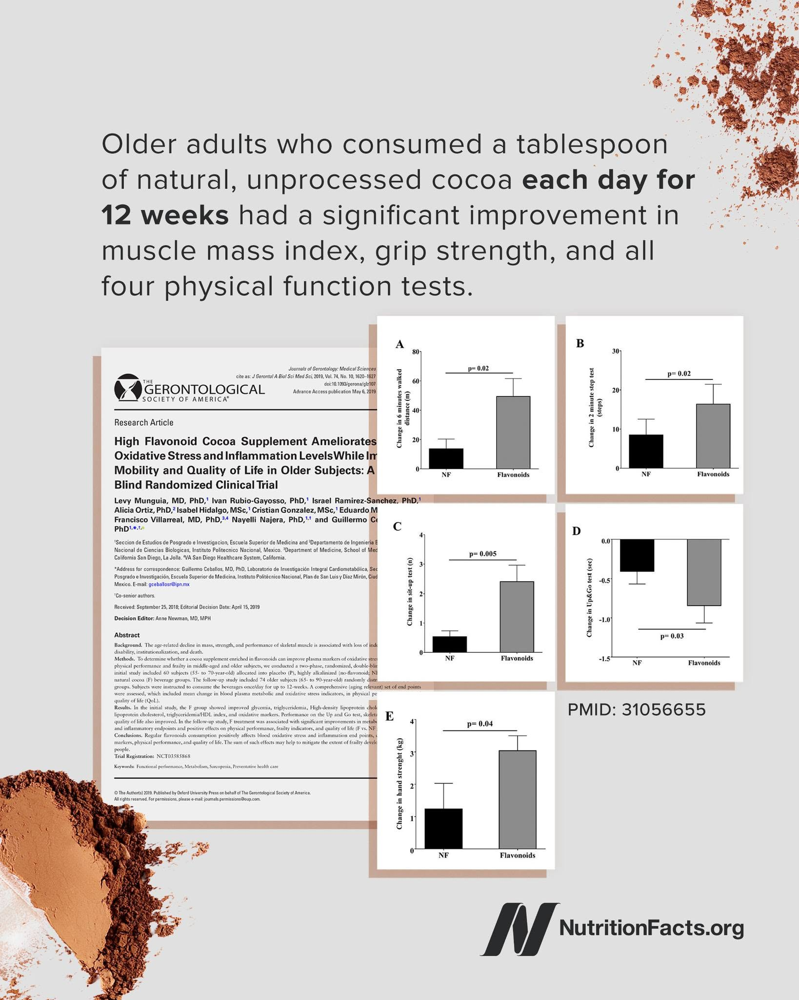
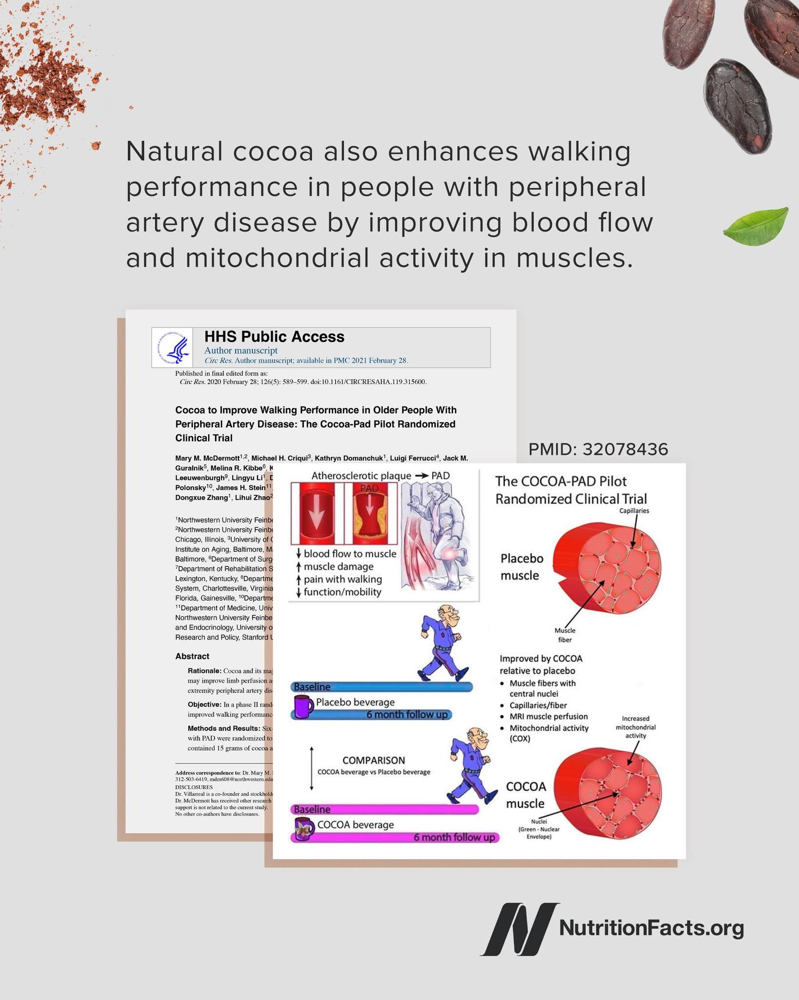
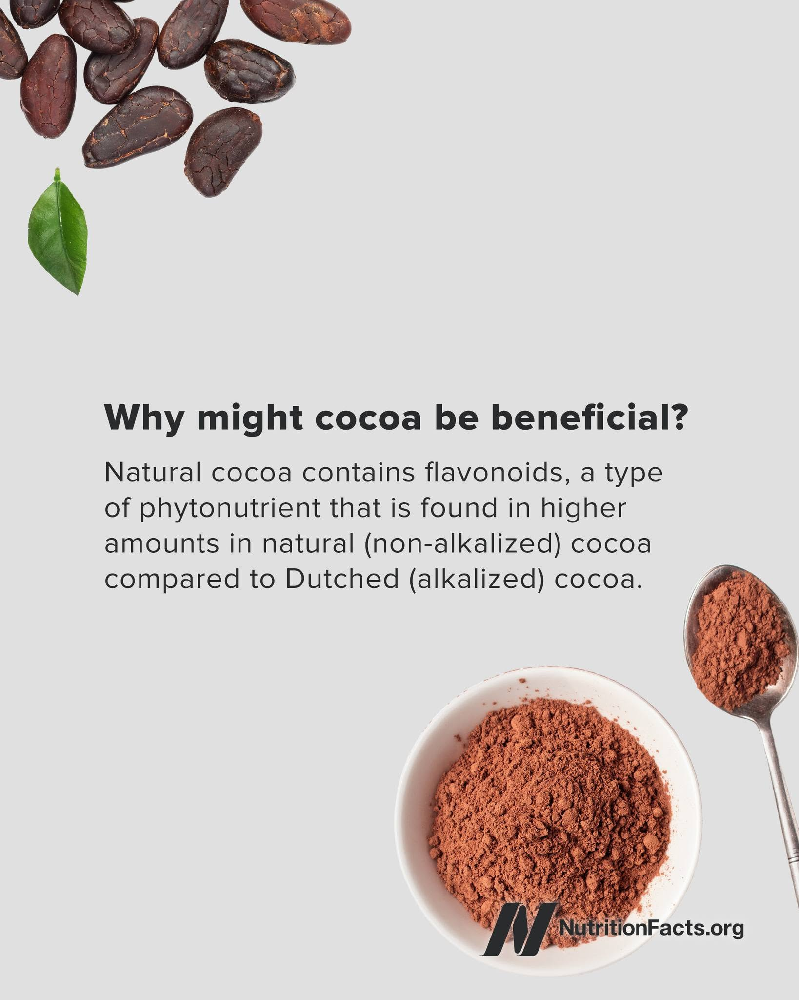
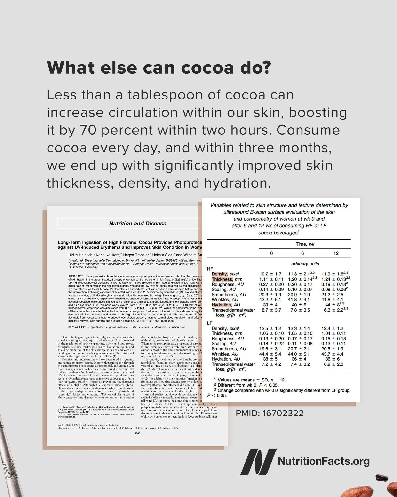

This is a remarkable study.
Simply consuming one tablespoon of cocoa powder each day improves grip strength and muscle mass in older people.
NutritionFacts reports older adults taking a tablespoon of unprocessed cocoa daily for 12 weeks improved muscle mass index, grip strength and four physical function tests.
This is a remarkable study.
Simply consuming one tablespoon of cocoa powder each day improves grip strength and muscle mass in older people.
Older adults who consumed a tablespoon of natural, unprocessed cocoa each day for 12 weeks had a significant improvement in muscle mass index, grip strength, and all four physical function tests. How Not To Age – Live Presentation | NutritionFacts.org (nutritionfacts.org)




Louis shares a large observational study in the European Heart Journal where older US veterans who initiated statins had significantly lower frailty risk over time. Authors suggest anti-inflammatory effects may slow functional decline but emphasize randomized trials are needed.
Louis shares the observational VA/Mass General Brigham study (JACC) reporting that older US veterans starting statins developed less frailty over time. He notes two large randomized trials, PREVENTABLE and STAREE, are testing statins in the elderly and tracking frailty, with STAREE expected to report within months.
Louis comments on an AJCN 2026 nested case-control study of Chinese adults 80+: non-meat eaters were less likely to reach 100, but only if underweight and frail. He cautions that case-control studies are low on the evidence hierarchy and may not be causal, and suggests protein and IGF-1 may matter in frail old age.

Louis shares Luigi Fontana's argument that frailty and sarcopenia in Western older adults reflect decades of overnutrition and inactivity, not low protein. The post cites randomized trials in which protein supplements gave small or no functional gains, while resistance exercise produced the functional benefit.
Louis cites a 2022 Nurses' Health Study analysis in which higher plant protein intake was associated with lower frailty risk, while animal and dairy protein were not. He adds that protein alone does not build muscle without resistance exercise.

Louis argues the standard American diet supplies the most total and animal protein of any major region, yet the US has high rates of heart disease, cancer, sarcopenia and frailty. He concludes there is no protein emergency in the US. This is an ecological argument without cited studies.